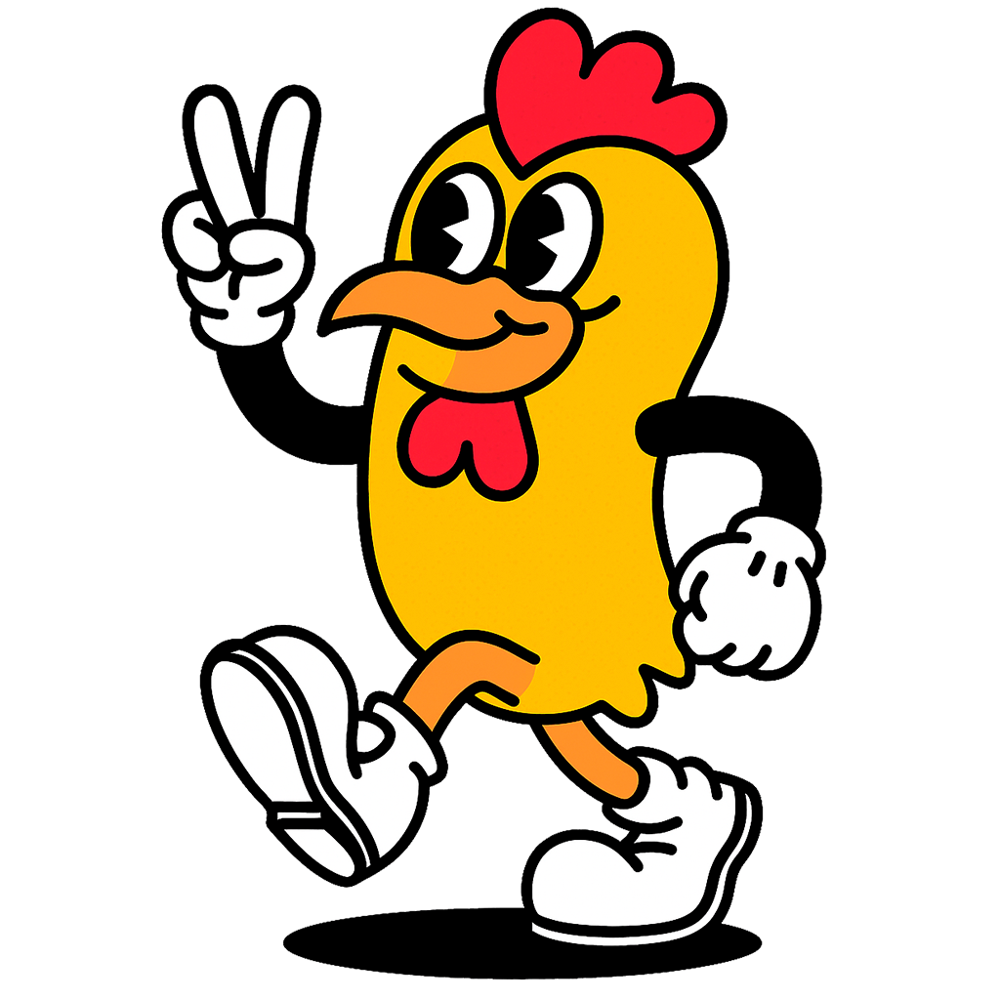

<!-- <ion-content [fullscreen]="true" class="juego-container">
  
  <div class="game-area" (click)="onAction($event)">

    <div class="game-overlay" *ngIf="!juegoActivo">
      <h1 class="fritos-logo">¡El Atrapa-Pollo!</h1>
      <p class="fritos-subtitle">Haz clic o presiona ESPACIO para saltar y llegar a la meta.</p>
      <ion-button color="fritos-red" (click)="iniciarJuego()">
        Comenzar (Primer Intento)
      </ion-button>
    </div>

    <div class="pollo" [style.transform]="polloStyle">
      <ion-icon name="happy-outline" class="pollo-icon"></ion-icon>
    </div>

    <div 
      class="meta" 
      [style.left]="(metaDistancia - distanciaRecorrida) * 0.1 + 'px'"
      [style.width]="metaAncho + 'px'"
    >
      <ion-icon name="cube-outline" class="meta-icon"></ion-icon>
    </div>

    <div class="score-display">
      Distancia: {{ distanciaRecorrida }} / {{ metaDistancia }}
    </div>

    </div>

</ion-content> -->

<ion-content [fullscreen]="true" class="juego-container">
  
  <div class="game-area" (click)="onAction($event)">
    
     <!-- PANTALLA DE INICIO (gameState === 'inicio') -->
    <div class="game-overlay" *ngIf="gameState === 'inicio'">
      <h1 class="fritos-logo">🍗 ¡Crispy el Atrapa-Pollo!</h1>
      
      <!-- Mensaje según elegibilidad -->
      <p class="fritos-subtitle estado-mensaje" 
         [class.puede-ganar]="puedeJugarPorDescuento"
         [class.sin-descuento]="!puedeJugarPorDescuento">
        {{ getMensajeInicio() }}
      </p>
      
      <p>Instrucciones: Haz clic para saltar y esquivar los obstáculos.</p>
      
      <ion-button expand="block" [color]="puedeJugarPorDescuento ? 'success' : 'primary'" (click)="iniciarJuego()">
        <ion-icon name="game-controller-outline" slot="start"></ion-icon>
        {{ puedeJugarPorDescuento ? 'Comenzar (Intento por Descuento)' : 'Jugar' }}
      </ion-button>
      
      <ion-button expand="block" fill="outline" color="medium" (click)="volverAlHome()">
        <ion-icon name="arrow-back-outline" slot="start"></ion-icon>
        Volver
      </ion-button>
    </div>

    <!-- PANTALLA DE RESULTADO (gameState === 'terminado') -->
    <div class="game-overlay resultado-final" *ngIf="gameState === 'terminado'">
        <h1 class="fritos-logo">
            {{ resultadoFinal.exito ? '🎉 ¡GANASTE!' : '💔 Game Over' }}
        </h1>
        
        <div class="score-card">
            <h2 class="fritos-subtitle">Puntuación Final:</h2>
            <p class="data-score">{{ resultadoFinal.distancia | number:'1.0-0' }} Puntos</p>
            
            @if (resultadoFinal.exito && resultadoFinal.porcentaje > 0) {
              <h2 class="fritos-subtitle">🎉 Descuento Obtenido:</h2>
              <p class="data-desc ganado">{{ resultadoFinal.porcentaje }}%</p>
            }
        </div>
        
        <div class="mensaje-desc">
            @if (mensajeResultado) {
              <p>{{ mensajeResultado }}</p>
            } @else {
              <p *ngIf="resultadoFinal.exito">
                  ¡El descuento ha sido registrado en tu pedido!
              </p>
              <p *ngIf="!resultadoFinal.exito">
                  No ganaste esta vez. ¡Podés seguir jugando por diversión!
              </p>
            }
        </div>

        <!-- Botones de acción -->
        <ion-button expand="block" color="secondary" (click)="reiniciarJuego()">
            <ion-icon name="refresh-outline" slot="start"></ion-icon>
            Jugar de Nuevo
        </ion-button>
        
        <ion-button expand="block" fill="outline" color="medium" (click)="volverAlHome()">
            <ion-icon name="arrow-back-outline" slot="start"></ion-icon>
            Volver al Menú de Juegos
        </ion-button>

    </div>

    <!-- <div class="game-overlay" *ngIf="!juegoActivo">
      </div> -->

    <!-- Contenedor del juego (Visible en 'jugando') -->
    <ng-container *ngIf="gameState === 'jugando'">
        <!-- Crispy (El Pollo) -->
        <div class="pollo" [style.transform]="polloStyle">
            
        </div>

        <!-- Obstáculos (Columnas) -->
        @for (obs of obstaculos; track obs.id) {
          <div class="obstaculo-columna" [style.left]="obs.x + 'px'">
            
            <!-- Columna Superior -->
            <div 
              class="obstaculo-parte" 
              [style.height]="(obs.huecoY - obs.huecoAltura/2) + 'vh'"
              [style.top]="'0'"
            ></div>
            
            <!-- Columna Inferior -->
            <div 
              class="obstaculo-parte" 
              [style.height]="(100 - (obs.huecoY + obs.huecoAltura/2)) + 'vh'"
              [style.bottom]="'0'"
            ></div>
          </div>
        }

        <!-- Indicador de Puntuación/Distancia (Opcional) -->
        <div class="score-display">
          Distancia: {{ distanciaRecorrida | number:'1.0-0' }}
        </div>
    </ng-container>

  </div>

</ion-content>